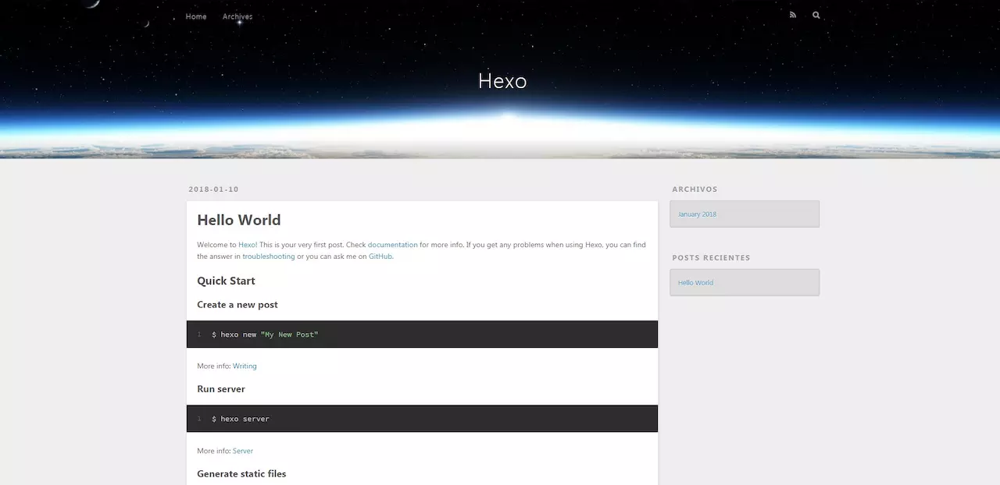

前段时间，辛辛苦苦花了一周的时间搭建了属于自己的个人技术博客，当然也是各种采坑各种跳，大家如果在搭建过程中遇到什么问题，可以参考基于GitHub和Hexo搭建个人博客
首先欢迎大家来到我的博客空间。
接下来我来介绍如何搭建属于自己的 blog 空间
入门门槛
- 必须耐得住性子经得起折磨
- 要有刻苦学习的精神
安装 Node.js
安装 Node.js 非常简单，仅须刀官网下载安装文件并执行即可安装完成。
根据自己的电脑，直接下载安装，无脑下一步就行了，不需要配置环境变量。
安装 Git
同样的去 Git官网根据你的电脑参数下载对应的版本。
下载完成，通过命令输入 git version 查看是否安装成功，有版本号说明安装成功。
- Git 入门教程：Pro Git（中文版)
可以看下 git 入门教程。
- git 基本操作
Hexo
Hexo 是一个快速、简洁且高效的博客框架。Hexo 使用 Markdown（或其他渲染引擎）解析文章，在几秒内，即可利用靓丽的主题生成静态网页。
一、Hexo安装
打开电脑终端输入 npm 命令即可安装1
2
3npm install hexo-cli -g
npm install hexo-deployer-git --save
第一句是安装hexo，第二句是安装hexo部署到git page的deployer，两个都需要安装。
安装成功会出现 hexo-cli 版本号字样。
二、Hexo初始化配置
创建Hexo文件夹
安装完成后，根据自己喜好建立目录（如\Blog\Hexo），直接用终端 cd Blog\Hexo文件夹下输入Git命令。
1 | $ hexo init |
安装 Hexo 完成后，Hexo 将会在指定文件夹中新建所需要的文件。Hexo文件夹下的目录如下：
查看本地效果
1 | hexo generate |
根据终端提示，在浏览器输入 localhost:4000，即可看到本地的效果如下：

将博客部署到Github Pages上
那么现在本地的博客已经搭建起来了，但是我们只可以通过本地连接查看我们的博客。那么我们现在需要做的就是把本地的博客发布到服务器上，让别人也可以连接我们的博客，而Github Pages就帮我完成了这件事情。但是Github Pages的代码就是寄存在Github上面的。那么接下来我们需要在Github上面创建一个新的项目。
一、注册Github账户
- 访问Github首页
- 点击右上角的 Sign Up，注册自己的账户
二、创建项目代码库
- 注册完登陆后，我们就创建一个我们自己的Github Pages项目。点击New repository。
- 创建要点如下:
三、配置SSH密钥
配置Github的SSH密钥可以让本地git项目与远程的github建立联系，让我们在本地写了代码之后直接通过git操作就可以实现本地代码库与Github代码库同步。操作如下：
第一步、看看是否存在SSH密钥(keys)
首先，我们需要看看是否看看本机是否存在SSH keys,打开Git Bash,并运行:
1 | $ cd ~/. ssh |
检查你本机用户home目录下是否存在.ssh目录
如果，不存在此目录，则进行第二步操作，否则，你本机已经存在ssh公钥和私钥，可以略过第二步，直接进入第三步操作。
第二步、创建一对新的SSH密钥(keys)
1 | $ssh-keygen -t rsa -C "your_email@example.com" |
直接回车，则将密钥按默认文件进行存储。
接着，根据提示，你需要输入密码和确认密码（说到这里，如果你很放心，其实可以不用密码，就是到输密码的地方，都直接回车，所以每次push就只管回车就行了。所谓的最安全的密码，就是没有密码 哈哈）。相关提示如下：1
2Enter passphrase (empty for no passphrase): [Type a passphrase]
Enter same passphrase again: [Type passphrase again]
输入完成之后，屏幕会显示如下信息：
1 | Your identification has been saved in /c/Users/you/.ssh/id_rsa. |
第三步、在GitHub账户中添加你的公钥
运行如下命令，将公钥的内容复制到系统粘贴板(clipboard)中。1
clip < ~/.ssh/id_rsa.pub
接着：
登陆GitHub,进入你的Account Settings.
选择SSH Keys
粘贴密钥，添加即可
第四步、测试
可以输入下面的命令，看看设置是否成功，git@github.com的部分不要修改：1
$ ssh -T git@github.com
如果是下面的反馈：
1 | The authenticity of host 'github.com (207.97.227.239)' can't be established. |
不要紧张，输入yes就好。
第五步、设置用户信息
现在你已经可以通过SSH链接到GitHub了，还有一些个人信息需要完善的。
Git会根据用户的名字和邮箱来记录提交。GitHub也是用这些信息来做权限的处理，输入下面的代码进行个人信息的设置，把名称和邮箱替换成你自己的，名字根据自己的喜好自己取，而不是GitHub的昵称。
1 | $ git config --global user.name "panxiaoting"//用户名 |
第六步、SSH Key配置成功
本机已成功连接到github。
四、将本地的Hexo文件更新到Github的库中
第一步、登录Github打开自己的项目 username.github.io
第二步、打开之后，点击SSH，选择SSH类型地址
第三步、复制地址
第四步、打开你一开始创建的Hexo文件夹（Blog\Hexo），用记事本打开刚文件夹下的_config.yml文件
第五步、在配置文件里作如下修改，保存

第六步、在Hexo文件夹下执行：
1 | hexo g |
或者直接执行
1 | hexo g -d |
执行完之后会让你输入github的账号和密码，输入完后就可以登录我们自己的部署在Github Pages服务器上的博客了。对应的地址是 username.github.io(我的是：ryanlijianchang.github.io)。
假如这时候，报错 ERROR Deployer not found: git ，那么就是你的deployer没有安装成功，你需要执行如下命令再安装一次：
1 | npm install hexo-deployer-git --save |
这样，你再执行hexo g -d，你的博客就部署到Github上了。
第七步、在浏览器上输入自己的主页地址
在浏览器上输入Github Pager为我们生成的外链（例如我的是：panxiaoting.github.io/，而你的只需要把你的github用户名替换掉这个链接中的panxiaoting，因为我的用户名是这个，那么你自己的专属博客地址就是：https://[您的用户名].github.io/）即可看到自己的博客了。
当然，每一个人都可以通过这个地址访问到你的博客了。

美化自己博客
那么现在我们的博客已经挂在了Github服务器上面，别人已经可以通过地址来登陆我们的博客了，但是我们这时就有了新的需求，就是自己的博客并不好看，那怎么办的？这很简单，要知道很多前端开发者在Hexo框架下开发了很多的主题给我们使用，我们只需要把他们的主题克隆过来，然后通过修改配置文件即可达到我们所需要的效果。
那么我们应该怎么修改呢？
一、进入Hexo的官网主题专栏
二、挑选我们喜欢的主题
可以看到有很多主题给我们选，我们只要选择喜欢的主题点击进去，然后进入到它的github地址，我们只要把这个地址复制下来(例如我是选择：hexo-theme-next这个主题)
三、克隆主题
用终端进入Hexo文件夹下的themes目录，输入命令：
1 | git clone https://github.com/iissnan/hexo-theme-next(此处地址替换成你需要使用的主题的地址) |
等待下载完成。
四、修改Hexo配置文件
下载完成后，打开Hexo文件夹下的配置文件_config.yml
修改参数为：theme: hexo-theme-next
五、部署主题，本地查看效果
返回Hexo目录，在终端，输入
1 | hexo g |
打开浏览器，输入 http://localhost:4000/ 即可看见我们的主题已经更换了。
六、如果效果满意，将它部署到Github上
打开Hexo文件夹，在终端，输入
1 | hexo clean (必须要，不然有时因为缓存问题，服务器更新不了主题) |
七、打开自己的主页，即可看到修改后的效果
更多修改效果请查看对应主题的说明文档，点击此查看本主题(Next)对应的说明文档。
在博客写文章
一、用hexo发表新文章1
$ hexo n "文章标题"
其中 我的家 为文章标题，执行命令 hexo n “我的家” 后，会在项目 \Hexo\source_posts 中生成 我的家.md文件，用编辑器打开编写即可。
当然，也可以直接在\Hexo\source_posts中新建一个md文件，我就是这么做的。
写完后，推送到服务器上，执行以下命令即可在我们的站点看到新的文章。
1 | $ hexo g #生成 |
二、用Markdown写文章
我们注意到在 \Hexo\source_posts 文件夹下存放着我们的文章，它们的格式都是以.md格式结尾的，没错，Hexo也是支持Markdown语法的，所以当我们需要写具有格式化的文章时，我们可以使用支持Markdown语法的编辑器进行文章编译，然后保存文件到 \Hexo\source_posts 文件夹下即可。
执行命令：
1 | $ hexo d -g |
推送到我们的Github仓库即可。
关于怎么用 md 文件写博客文章，可以参考我上一篇博文
将自己的域名关联到Github Pages上
很多朋友创建了自己的博客之后会选择买一个属于自己的域名，然后将自己域名绑定到自己的Github Pages博客上，其实这也并不难，只要你有个域名。
一、购买域名
如果你不是很有钱，在阿里云上，你只要几块钱就可以买到一个域名。
选择你喜欢的域名，然后购买即可。
二、配置CNAME文件
在 \hexo\source 文件夹下创建文件 CNAME （新建记事本文件命名CNAME，然后打开）
内容为你的域名，例如我的域名是：PanXt727.top
在Hexo文件夹提交
1 | hexo g -d |
三、修改DNS的DNS
如果你是在阿里云购买域名的话，请登录阿里云网站。打开个人中心，点击域名
选择管理

修改DNS为
1
2f1g1ns2.dnspod.net
f1g1ns1.dnspod.net
四、域名解析
打开DNSPOD，注册一个账户
点击添加域名，把你的域名添加进去，如无意外，添加完之后就是以下这个状态

此时点击添加记录，添加两个记录，一个主机记录为@， 一个为www，而记录值都是填同一个，填你的博客主页对应的ip，添加完后如下。
但是如何获取ip值呢？打开终端 ping 自己的主页地址这个可以自行百度。
将IP输入过去，然后会提示你到域名注册的地方修改DNS。等待生效，最迟72小时生效。即可通过你的域名浏览你的博客主页。
结语
到这里就全部弄好了。我相信大家的心情跟我一起，即使很累，但是看到自己的博客成型之后，还是很有成就感的。哈哈～
如果大家还想把自己的博客更美观一点可以参考